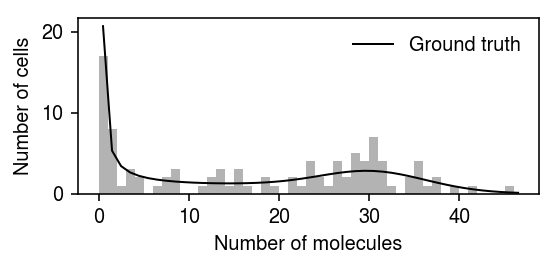

Poisson-Beta model
Table of Contents
Introduction
One idealized model for transcriptional regulation is the telegraph model (Peccoud and Ycart 1995, Raj et al. 2006, Kim and Marioni 2013, Munsky et al. 2013), whose steady state is described by \( \newcommand\Bin{\operatorname{Binomial}} \newcommand\B{\operatorname{Beta}} \newcommand\E[1]{\left\langle #1 \right\rangle} \newcommand\Gam{\operatorname{Gamma}} \newcommand\Pois{\operatorname{Poisson}} \newcommand\aoff{a_{\text{off}}} \newcommand\aon{a_{\text{on}}} \newcommand\ar{a_r} \newcommand\betafun{\operatorname{B}} \newcommand\boff{b_{\text{off}}} \newcommand\bon{b_{\text{on}}} \newcommand\br{b_r} \newcommand\const{\mathrm{const}} \newcommand\koff{k_{\text{off}}} \newcommand\kon{k_{\text{on}}} \newcommand\kr{k_r} \)
\begin{align*} x_i \mid p_i, \kr &\sim \Pois(p_i \kr)\\ p_i \mid \kon, \koff &\sim \B(\kon, \koff) \end{align*}where \(x_i\) is the number of mRNA molecules in cell \(i=1, \ldots, n\) (considering only one gene), \(\kon\) is the rate of off\(\rightarrow\)on promoter switching, \(\koff\) is the rate of on\(\rightarrow\)off promoter switching, and \(\kr\) is the rate of mRNA synthesis. (All rates are scaled relative to the mRNA decay rate.)
The inference goal is to estimate \(\kr, \kon, \koff\) given data \(x\) assumed to be at steady state. The marginal likelihood \(p(x_i \mid \kr, \kon, \koff)\) does have a closed form; however, it involves the confluent hypergeometric function of the first kind (Raj et al 2006), which is difficult to evaluate. To avoid this challenge, Kim and Marioni 2013 develop an MCMC scheme to sample from the posterior \(p(\kr, \kon, \koff \mid x_1, \ldots, x_n)\), and Larsson et al. 2019 use numerical integration to evaluate the marginal likelihood.
We collected these different inference algorithms into a Python package poisbeta. Here, we investigate how the running time of the MLE procedure (using numerical integration) scales, and whether variational inference can improve the running time. We also investigate the effect of size factors (Kim and Marioni 2013) and initialization on the estimates.
Setup
import colorcet import itertools as it import numpy as np import pandas as pd import poisbeta import scipy.optimize as so import scipy.special as sp import scipy.stats as st import sys import timeit
%matplotlib inline %config InlineBackend.figure_formats = set(['retina'])
import matplotlib.pyplot as plt plt.rcParams['figure.facecolor'] = 'w' plt.rcParams['font.family'] = 'Nimbus Sans'
Methods
Moment estimation
Peccoud and Ycart 1995 derived moment estimators for \(\kr, \kon, \koff\)
def fit_poisson_beta_moment(x, **kwargs): """Return ln kr, ln kon, ln koff Estimate kr, kon, koff using the first three exponential moments (Peccoud & Ycart 1995). x - array-like [n,] """ moments = np.array([1, x.mean(), (x * (x - 1)).mean(), (x * (x - 1) * (x - 2)).mean()]) ratios = moments[1:] / moments[:-1] kr = (2 * ratios[0] * ratios[2] - ratios[0] * ratios[1] - ratios[1] * ratios[2]) / (ratios[0] - 2 * ratios[1] + ratios[2]) kon = (2 * ratios[0] * (ratios[2] - ratios[1])) / (ratios[0] * ratios[1] - 2 * ratios[0] * ratios[2] + ratios[1] * ratios[2]) koff = (2 * (ratios[2] - ratios[1]) * (ratios[0] - ratios[2]) * (ratios[1] - ratios[0])) / ((ratios[0] * ratios[1] - 2 * ratios[0] * ratios[2] + ratios[1] * ratios[2]) * (ratios[0] - 2 * ratios[1] + ratios[2])) result = np.array([kr, kon, koff]) if not (np.isfinite(result).all() and (result > 0).all()): raise RuntimeError('moment estimation failed') return np.log(result)
Maximum likelihood estimation
Larsson et al. 2019 use Gauss-Jacobi quadrature to evaluate the marginal likelihood
\begin{align*} \ell &= \frac{1}{\betafun(\kon, \koff)} \int_0^1 \Pois(x_i; \kr p_i)\, p_i^{\kon - 1} (1 - p_i)^{\koff - 1}\; dp_i\\ &= \frac{1}{2^{\kon + \koff - 1} \betafun(\kon, \koff)} \int_{-1}^1 \Pois(x_i; \kr \frac{1 + t_i}{2})\, (1 + t_i)^{\kon - 1} (1 - t_i)^{\koff - 1}\; dt_i\\ &\approx \frac{1}{2^{\kon + \koff - 1} \betafun(\kon, \koff)} \sum_{k=1}^K w_k \Pois(x_i; \kr y_k) \end{align*}where \(\betafun(\cdot)\) denotes the Beta function, \(y_k\) is the root of the Jacobi polynomial of degree \(k\), and \(w_k\) is the associated weight. This procedure can be used as a subroutine to numerically optimize the marginal likelihood.
def poisson_beta_logpmf(theta, x, s, n_points=50): kr, kon, koff = np.exp(theta) + 1e-8 # Important: Gauss-Jacobi quadrature computes the integral over t ∈ [-1, 1], # but we want the integral over p ∈ [0, 1] t, w = sp.roots_jacobi(n=n_points, alpha=koff - 1, beta=kon - 1) # (n_points, 1) p = ((1 + t) / 2).reshape(-1, 1) # (1, n_points) @ (n_points, n) px = w.reshape(1, -1) @ st.poisson(mu=s * kr * p).pmf(x.reshape(1, -1)) # Important: extra 1/2 comes from u-substitution return np.log(px) - sp.betaln(kon, koff) - (kon + koff - 1) * np.log(2) def poisson_beta_pmf(theta, x, s, n_points=50): return np.exp(poisson_beta_logpmf(theta, x, s, n_points)) def poisson_beta_neg_llik(theta, x, s, n_points=50): """Return the negative log likelihood of the data theta - [ln k_r, ln k_on, ln k_off] n_points - number of points used in numerical integration """ return -poisson_beta_logpmf(theta, x, s, n_points).sum() def fit_poisson_beta_mle(x, s=None, init=None, max_iters=1000, n_points=50): """Return ln k_r, ln k_on, ln k_off x - array-like [n,] init - [ln k_r, ln k_on, ln k_off] n_points - number of points used in numerical integration """ if init is None: try: init = fit_poisson_beta_moment(x) except RuntimeError: init = np.zeros(3) if s is None: s = 1 opt = so.minimize(poisson_beta_neg_llik, x0=init, args=(x, s, n_points), method='Nelder-Mead', options={'maxiter': max_iters}) if not opt.success: raise RuntimeError(f'failed to converge: {opt.message}') return opt.x
Slice-within-Gibbs sampling
Kim & Marioni 2013 add priors
\begin{align*} \kr \mid \ar, \br &\sim \Gam(\ar, \br)\\ \kon \mid \aon, \bon &\sim \Gam(\aon, \bon)\\ \koff \mid \aoff, \boff &\sim \Gam(\aoff, \boff) \end{align*}The conditional (log) densities are available, up to constants
\begin{align*} \ln p(p_i \mid \cdot) &= (x_i + \kon - 1) \ln p_i + (\koff - 1)\ln(1 - p_i) - \kr p_i + \const\\ \ln p(\kr \mid \cdot) &= \sum_i [(x_i + \ar - 1) \ln \kr - (p_i + \br) \kr] + \const\\ \ln p(\kon \mid \cdot) &= \sum_i [\kon \ln p_i + (\aon - 1)\ln \kon - \bon\kon - \ln\Gamma(\kon) + \ln\Gamma(\kon + \koff)] + \const\\ \ln p(\koff \mid \cdot) &= \sum_i [\koff \ln (1 - p_i) + (\aoff - 1)\ln \koff - \boff\koff - \ln\Gamma(\koff) + \ln\Gamma(\kon + \koff)] + \const \end{align*}Although the conditional distributions are non-standard, slice sampling (Neal 2003) only requires the target density up to a constant.
def _slice_sample(f, init, width=0.1, max_steps=100, **kwargs): """Return samples from the density proportional to exp(f) f - log density (up to a constant) init - initial value kwargs - additional arguments to f """ # Auxiliary variable defines the slice z = f(init, **kwargs) - np.random.exponential() # Step out left = init - width * np.random.uniform() right = left + width left_steps = int(np.random.uniform() * max_steps) for _ in range(left_steps): if z < f(left, **kwargs): break left -= width for _ in range(max_steps - left_steps): if z < f(right, **kwargs): break right += width # Step in while right > left: proposal = left + np.random.uniform() * (right - left) if z < f(proposal, **kwargs): return proposal elif proposal < init: left = proposal else: right = proposal raise RuntimeError('failed to find an acceptable sample') def _cond_logpdf_p(p, x, kr, kon, koff): return (x + kon - 1) * np.log(p) + (koff - 1) * np.log(1 - p) - kr * p def _cond_logpdf_kr(kr, x, p, ar, br): return ((x + ar - 1) * np.log(kr) - (p + br) * kr).sum() def _cond_logpdf_kon(kon, p, koff, aon, bon): return (kon * np.log(p) + (aon - 1) * np.log(kon) - bon * kon - sp.gammaln(kon) + sp.gammaln(kon + koff)).sum() def _cond_logpdf_koff(koff, p, on, aoff, boff): return (koff * np.log(1 - p) + (aoff - 1) * np.log(koff) - boff * koff - sp.gammaln(koff) + sp.gammaln(on + koff)).sum() def fit_poisson_beta_mcmc(x, n_samples, ar, br, aon, bon, aoff, boff, verbose=False): """Return samples from the posterior p(kon, koff, kr | x) x - counts (n,) n_samples - number of samples to draw ar, br - prior parameters kr ~ Gamma(ar, br) aon, bon - prior parameters kon ~ Gamma(aon, bon) aoff, boff - prior parameters koff ~ Gamma(aoff, boff) """ samples = [] # Important: these are fixed Fr = st.gamma(a=ar, scale=1 / br) Fon = st.gamma(a=aon, scale=1 / bon) Foff = st.gamma(a=aoff, scale=1 / boff) # Draw initial sample from the prior kr = Fr.rvs(size=1) kon = Fon.rvs(size=1) koff = Foff.rvs(size=1) p = st.beta(a=kon, b=koff).rvs(size=x.shape) for t in range(n_samples): samples.append((kr, kon, koff)) for i in range(x.shape[0]): p[i] = _slice_sample(_cond_logpdf_p, init=p[i], x=x[i], kr=kr, kon=kon, koff=koff) kr = _slice_sample(_cond_logpdf_kr, init=kr, x=x, p=p, ar=ar, br=br) kon = _slice_sample(_cond_logpdf_kon, init=kon, p=p, koff=koff, aon=aon, bon=bon) koff = _slice_sample(_cond_logpdf_koff, init=koff, p=p, kon=kon, aoff=aoff, boff=boff) if verbose: log_joint = (st.poisson(mu=kr * p).logpmf(x).sum() + st.beta(a=kon, b=koff).logpdf(p).sum() + Fr.logpdf(kr) + Fon.logpdf(kon) + Foff.logpdf(koff)) print(f'sample {t}: {log_joint}') return samples
Variational inference
To make the model amenable for VI, introduce latent variables \(z_i\)
\begin{align*} x_i \mid z_i, p_i &\sim \Bin(z_i, p_i)\\ z_i \mid \kr &\sim \Pois(\kr)\\ p_i \mid \kon, \koff &\sim \B(\kon, \koff) \end{align*}Then, we have
\begin{multline*} \ln p(x_i, z_i, p_i \mid \kr, \kon, \koff) = (x + \kon - 1) \ln p_i + (z_i - x_i + \koff - 1) \ln(1 - p_i)\\ + (z_i - x_i) \ln \kr - \kr + x_i \ln \kr - \ln\Gamma(x_i + 1) - \ln\Gamma(z_i - x_i + 1) - \ln\betafun(\kon, \koff) \end{multline*}where we have added and subtracted \(x_i \ln \kr\) to more easily derive coordinate updates
\begin{align*} q^*(z_i - x_i) &= \Pois(\exp(\E{\ln (1 - p_i)} + \ln k_r)) \triangleq \Pois(\mu_i) \\ q^*(p_i) &= \B(x_i + \kon, \E{z_i - x_i} + \koff) \triangleq \B(\alpha_i, \beta_i) \end{align*}where expectations are taken with respect to the variational approximation \(q\). Using properties of the Beta distribution
\begin{align*} \E{\ln p_i} &= \psi(\alpha_i) - \psi(\alpha_i + \beta_i)\\ \E{\ln (1 - p_i)} &= \psi(\beta_i) - \psi(\alpha_i + \beta_i) \end{align*}where \(\psi\) is the digamma function. The evidence lower bound is
\begin{multline*} \ell = \sum_i (x_i + \kon - \alpha_i) \E{\ln p_i} + (\mu_i + \koff - \beta_i) \E{\ln(1 - p_i)}\\ + (x_i + \mu_i) \ln \kr - k_r - \mu_i \ln \mu_i + \mu_i - \ln\Gamma(x_i + 1) - \ln\betafun(\kon, \koff) + \ln\betafun(\alpha_i, \beta_i) \end{multline*}We can derive the Jacobian with respect to \(\kr, \kon, \koff\), leading to an analytic update for \(\kr\). We can use Brent's method to numerically update \(\kon, \koff\).
\begin{align*} \frac{\partial \ell}{\partial \kr} &= \sum_i \frac{x_i + \mu_i}{\kr} - 1\\ \kr &:= \frac{1}{n} \sum_i x_i + \mu_i\\ \frac{\partial \ell}{\partial \kon} &= \sum_i \psi(\alpha_i) - \psi(\alpha_i - \beta_i) - \psi(\kon) + \psi(\kon + \koff)\\ \frac{\partial \ell}{\partial \koff} &= \sum_i \psi(\beta_i) - \psi(\alpha_i - \beta_i) - \psi(\koff) + \psi(\kon + \koff) \end{align*}def poisson_beta_elbo(theta, x, mu, alpha, beta): """Return the evidence lower bound theta - [ln k_r, ln k_on, ln k_off] x - array-like [n,] mu - array-like [n,] alpha - array-like [n,] beta - array-like [n,] """ kr, kon, koff = np.exp(theta) return ((x + kon - alpha) * (sp.digamma(alpha) - sp.digamma(alpha + beta)) + (mu + koff - beta) * (sp.digamma(beta) - sp.digamma(alpha + beta)) + (x + mu) * np.log(kr) - kr - mu * np.log(mu) + mu - sp.gammaln(x + 1) - sp.betaln(kon, koff) + sp.betaln(alpha, beta)).sum() def poisson_beta_delbo_dkon(ln_kon, ln_koff, alpha, beta): """Return the partial derivative of ELBO wrt kon""" return (sp.digamma(alpha) - sp.digamma(alpha - beta) - sp.digamma(np.exp(ln_kon)) + sp.digamma(np.exp(ln_kon) + np.exp(ln_koff))).sum() def poisson_beta_delbo_dkoff(ln_koff, ln_kon, alpha, beta): """Return the partial derivative of ELBO wrt koff""" return (sp.digamma(beta) - sp.digamma(alpha - beta) - sp.digamma(np.exp(ln_koff)) + sp.digamma(np.exp(ln_kon) + np.exp(ln_koff))).sum() def fit_poisson_beta_vi(x, init=None, atol=1e-8, max_iters=1000, verbose=False): """Return kr, kon, koff init - [ln k_r, ln k_on, ln k_off] """ if init is None: init = np.log(fit_poisson_beta_moment(x)) theta = init mu = np.zeros(x.shape) alpha = np.ones(x.shape) beta = np.ones(x.shape) obj = -np.inf for t in range(max_iters): alpha = x + np.exp(theta[1]) beta = mu + np.exp(theta[2]) mu = np.exp(sp.digamma(beta) - sp.digamma(alpha + beta) + theta[0]) theta[0] = np.log((x + mu).mean()) opt_kon = so.newton(poisson_beta_delbo_dkon, x0=theta[1], args=(theta[2], alpha, beta)) if not opt_kon.success: raise RuntimeError(f'k_on update failed: {opt_kon.message}') theta[1] = opt_kon.x opt_koff = so.root_scalar(poisson_beta_delbo_dkoff, x0=theta[2], args=(theta[1], alpha, beta)) if not opt_koff.success: raise RuntimeError(f'k_on update failed: {opt_koff.message}') theta[1] = opt_koff.x update = poisson_beta_elbo(theta, x, mu, alpha, beta) if verbose: print(f'Epoch {t}: {update}') if abs(obj - update) < atol: return theta else: obj = update raise RuntimeError('failed to converge')
Simulation
Draw data from the basic model.
def simulate_pois_beta(n, s=None, kr=None, kon=None, koff=None, seed=None): if seed is not None: np.random.seed(seed) if kr is None: kr = np.random.lognormal(mean=3) if kon is None: kon = np.random.lognormal() if koff is None: koff = np.random.lognormal() if s is None: s = 1 p = np.random.beta(a=kon, b=koff, size=n) x = np.random.poisson(lam=s * kr * p) return x, kr, kon, koff
Draw data from a model with size factors.
\begin{align*} x_i \mid s_i, p_i, \kr &\sim \Pois(s_i p_i \kr)\\ p_i \mid \kon, \koff &\sim \B(\kon, \koff) \end{align*}def trial(n, mean_size, var_size, kr, kon, koff, seed): np.random.seed(seed) disp = (var_size - mean_size) / (mean_size * mean_size) s = np.random.poisson(lam=mean_size, size=n) * np.random.gamma(shape=1 / disp, scale=disp, size=n) x, *theta = simulate_pois_beta(n=n, s=s, kr=kr / mean_size, kon=kon, koff=koff, seed=1) theta0 = fit_poisson_beta_moment(x) theta0[0] -= np.log(s).mean() theta1 = fit_poisson_beta_mle(x) theta1[0] -= np.log(s).mean() theta2 = fit_poisson_beta_mle(x, s, init=theta0) return x, s, [np.log(theta), theta0, theta1, theta2]
Results
Simulation
Make sure the implementations work on one example.
x, *theta = simulate_pois_beta(n=1000, seed=0)
theta
[117.2199806492514, 1.4920592434019648, 2.661095776728801]
Fit the moment estimator.
thetahat_moment = fit_poisson_beta_moment(x)
np.exp(thetahat_moment)
array([120.04495743, 1.52142758, 2.72068022])
Fit the MLE.
thetahat_mle = fit_poisson_beta_mle(x)
np.exp(thetahat_mle)
array([118.92485772, 1.52953485, 2.68994176])
Evaluate more systematically.
def evaluate_estimator(n, n_trials): sim_result = [] grid = np.linspace(np.log(.1), np.log(100), 5) for (ln_kr, ln_kon, ln_koff) in itertools.product(grid, repeat=3): for trial in range(n_trials): x, *_ = simulate_pois_beta(n=n, kr=np.exp(ln_kr), kon=np.exp(ln_kon), koff=np.exp(ln_koff), seed=trial) for method in ['moment', 'mle']: try: thetahat = getattr(sys.modules['__main__'], f'fit_poisson_beta_{method}')(x) except RuntimeError: thetahat = [np.nan, np.nan, np.nan] sim_result.append([ln_kr, ln_kon, ln_koff, method, trial] + list(thetahat)) return pd.DataFrame(sim_result, columns=['ln_kr', 'ln_kon', 'ln_koff', 'method', 'trial', 'ln_kr_hat', 'ln_kon_hat', 'ln_koff_hat'])
res = evaluate_estimator(n=100, n_trials=1)
Report the fraction of data sets for which estimation failed.
res.groupby(['method']).apply(lambda x: x.dropna().shape[0] / x.shape[0])
method mle 0.584 moment 0.296 dtype: float64
Running time benchmark
def evaluate_running_time(n_trials): timing_result = [] for n in (100, 500, 1000, 5000, 10000): # Fix the parameters to something easy x, *_ = simulate_pois_beta(n=n, kr=50, kon=1, koff=1, seed=0) for m in ('moment', 'mle'): res = timeit.repeat(stmt=lambda: getattr(sys.modules['__main__'], f'fit_poisson_beta_{m}')(x), number=1, repeat=n_trials, globals=locals()) for i, t in enumerate(res): timing_result.append([n, m, i, t]) return pd.DataFrame(timing_result, columns=['n', 'method', 'trial', 'time'])
timing_res = evaluate_running_time(n_trials=10)
cm = plt.get_cmap('Dark2') plt.clf() plt.gcf().set_size_inches(3, 3) plt.xscale('log') plt.yscale('log') for i, (m, g) in enumerate(timing_res.groupby('method')): t = g.groupby('n')['time'].agg([np.mean, np.std]).reset_index() plt.plot(t['n'], t['mean'], lw=1, c=cm(i), label=m) plt.scatter(g['n'] + np.random.normal(scale=np.log10(g['n']), size=g.shape[0]), g['time'], c=cm(i), s=2, label=None) plt.legend(frameon=False, title='Method') plt.xlabel('Sample size') plt.ylabel('Running time (s)') plt.tight_layout()
Impact of size factors
Simulate a simple example with non-trivial size factor variation. Plot the estimated distributions, as well as the difference between the fitted Beta distributions and the ground truth.
x, s, res = trial(n=1000, mean_size=10000, var_size=250000, kr=32, kon=.5, koff=.25, seed=0) cm = plt.get_cmap('Dark2') plt.clf() fig, ax = plt.subplots(2, 1) fig.set_size_inches(6, 4) grid = np.arange(x.max() + 1) ax[0].hist(x, bins=grid, color='0.5') for i, (log_theta, label) in enumerate(zip(res, ['Ground truth', 'Moment', 'MLE (posthoc)', 'MLE'])): p = np.array([poisson_beta_pmf(log_theta, i, s).mean() for i in grid[:-1]]) ax[0].plot(.5 + grid[:-1], n * p, lw=1, c=cm(i), label=label) ax[0].legend(frameon=False, bbox_to_anchor=(1, .5), loc='center left') ax[0].set_xlabel('Number of molecules') ax[0].set_ylabel('Number of cells') grid = np.linspace(0, 1, 1000) fp = st.beta(a=kon, b=koff).logpdf(grid) for i, (log_theta, label) in enumerate(zip(res, ['Ground truth', 'Moment', 'MLE (posthoc)', 'MLE'])): if i > 0: ax[1].plot(grid, fp - st.beta(a=np.exp(log_theta[1]), b=np.exp(log_theta[2])).logpdf(grid), lw=1, c=cm(i)) ax[1].axhline(y=0, lw=1, ls=':', c='k') ax[1].set_xlabel('$p_i$') ax[1].set_ylabel('Diff log density\nfrom ground truth') fig.tight_layout()
Compare the log likelihoods of the fitted models.
pd.Series({k: poisson_beta_neg_llik(log_theta, x, s) for k, log_theta
in zip(['ground_truth', 'moment', 'mle_poshoc', 'mle'], res)})
ground_truth 3692.394156 moment 3690.490051 mle_poshoc 3690.382941 mle 3690.376902 dtype: float64
Look at some more examples.
x, s, res = trial(n=int(1e3), mean_size=1e5, var_size=4e5, kr=64, kon=2, koff=.5, seed=1) cm = plt.get_cmap('Dark2') plt.clf() fig, ax = plt.subplots(2, 1) fig.set_size_inches(6, 4) grid = np.arange(x.max() + 1) ax[0].hist(x, bins=grid, color='0.5') for i, (log_theta, label) in enumerate(zip(res, ['Ground truth', 'Moment', 'MLE (posthoc)', 'MLE'])): p = np.array([poisson_beta_pmf(log_theta, i, s).mean() for i in grid[:-1]]) ax[0].plot(.5 + grid[:-1], n * p, lw=1, c=cm(i), label=label) ax[0].legend(frameon=False, bbox_to_anchor=(1, .5), loc='center left') ax[0].set_xlabel('Number of molecules') ax[0].set_ylabel('Number of cells') grid = np.linspace(0, 1, 1000) fp = st.beta(a=kon, b=koff).logpdf(grid) for i, (log_theta, label) in enumerate(zip(res, ['Ground truth', 'Moment', 'MLE (posthoc)', 'MLE'])): if i > 0: ax[1].plot(grid, fp - st.beta(a=np.exp(log_theta[1]), b=np.exp(log_theta[2])).logpdf(grid), lw=1, c=cm(i)) ax[1].set_xlabel('$p_i$') ax[1].set_ylabel('Diff log density\nfrom ground truth') fig.tight_layout()
pd.Series({k: poisson_beta_neg_llik(log_theta, x, s) for k, log_theta
in zip(['ground_truth', 'moment', 'mle_poshoc', 'mle'], res)})
ground_truth 4053.912218 moment 4052.601052 mle_poshoc 4052.557805 mle 4052.557227 dtype: float64
Log likelihood surface
Simulate a single example.
x, *theta = simulate_pois_beta(n=1000, seed=0) log_theta = np.log(np.array(theta)) log_theta_hat = fit_poisson_beta_mle(x)
Plot the simulated data.
cm = plt.get_cmap('Dark2') plt.clf() plt.gcf().set_size_inches(4, 2) grid = np.arange(x.max() + 1) plt.hist(x, bins=grid, color='0.5') for i, (k, v) in enumerate(zip(['Ground truth', 'MLE'], [log_theta, log_theta_hat])): p = np.array([poisson_beta_pmf(v, i, 1).mean() for i in grid[:-1]]) plt.plot(.5 + grid[:-1], 1000 * p, lw=1, c=cm(i), label=k) plt.legend(frameon=False) plt.xlabel('Number of molecules') plt.ylabel('Number of cells') plt.tight_layout()
Draw the log likelihood surface about the true value.
M = 100 grid_kr = np.linspace(log_theta[0] - .5, log_theta[0] + .5, M) grid_kon = np.linspace(log_theta[1] - .5, log_theta[1] + .5, M) grid_koff = np.linspace(log_theta[2] - .5, log_theta[2] + .5, M)
llik_kr_kon = np.zeros((M, M)) for i in range(M): for j in range(M): llik_kr_kon[i, j] = poisson_beta_neg_llik(np.array([grid_kr[i], grid_kon[j], log_theta[2]]), x, 1) llik_kr_koff = np.zeros((M, M)) for i in range(M): for j in range(M): llik_kr_koff[i, j] = poisson_beta_neg_llik(np.array([grid_kr[i], log_theta[1], grid_koff[j]]), x, 1) llik_kon_koff = np.zeros((M, M)) for i in range(M): for j in range(M): llik_kon_koff[i, j] = poisson_beta_neg_llik(np.array([log_theta[0], grid_kon[i], grid_koff[j]]), x, 1)
cm = colorcet.cm['fire_r'] plt.clf() fig, ax = plt.subplots(2, 2) fig.set_size_inches(6, 6) ax[0,0].contour(grid_kr, grid_kon, llik_kr_kon, cmap=cm, linewidths=1, levels=np.linspace(llik_kr_kon.min(), llik_kr_kon.max(), 20)) ax[0,0].scatter(log_theta[0], log_theta[1], marker='x', s=32, c='k', label='Ground truth') ax[0,0].scatter(log_theta_hat[0], log_theta_hat[1], marker='x', s=32, c='r', label='MLE') ax[0,0].legend(handletextpad=0) ax[0,0].set_xlabel('$\ln(k_r)$') ax[0,0].set_ylabel('$\ln(k_{\mathrm{on}})$') ax[1,0].contour(grid_kr, grid_koff, llik_kr_koff, cmap=cm, levels=np.linspace(llik_kr_koff.min(), llik_kr_koff.max(), 20), linewidths=1) ax[1,0].scatter(log_theta[0], log_theta[2], marker='x', s=32, c='k') ax[1,0].scatter(log_theta_hat[0], log_theta_hat[2], marker='x', s=32, c='r') ax[1,0].set_xlabel('$\ln(k_r)$') ax[1,0].set_ylabel('$\ln(k_{\mathrm{off}})$') ax[0,1].contour(grid_koff, grid_kon, llik_kon_koff.T, cmap=cm, levels=np.linspace(llik_kon_koff.min(), llik_kon_koff.max(), 20), linewidths=1) ax[0,1].scatter(log_theta[2], log_theta[1], marker='x', s=32, c='k') ax[0,1].scatter(log_theta_hat[2], log_theta_hat[1], marker='x', s=32, c='r') ax[0,1].set_xlabel('$\ln(k_{\mathrm{off}})$') ax[0,1].set_ylabel('$\ln(k_{\mathrm{on}})$') ax[1,1].set_axis_off() fig.tight_layout()

Impact of initialization
Look at estimates starting from random initializations.
thetahat = [] for i in range(100): try: res = fit_poisson_beta_mle(x, init=np.random.normal(scale=0.5, size=3), max_iters=10000) except RuntimeError as e: print(f'Initialization {i} failed: {e.__cause__}') if not i % 10: print(f'Trial {i}') thetahat.append(res) thetahat = np.array(thetahat)
plt.clf() fig, ax = plt.subplots(2, 2) fig.set_size_inches(6, 6) ax[0,0].scatter(thetahat[:,0], thetahat[:,1], s=1, c='k') ax[0,0].set_xlabel('Estimated $\ln(k_r)$') ax[0,0].set_ylabel('Estimated $\ln(k_{\mathrm{on}})$') ax[1,0].scatter(thetahat[:,0], thetahat[:,2], s=1, c='k') ax[1,0].set_xlabel('Estimated $\ln(k_r)$') ax[1,0].set_ylabel('Estimated $\ln(k_{\mathrm{off}})$') ax[0,1].scatter(thetahat[:,2], thetahat[:,1], s=1, c='k') ax[0,1].set_xlabel('Estimated $\ln(k_{\mathrm{off}})$') ax[0,1].set_ylabel('Estimated $\ln(k_{\mathrm{on}})$') ax[1,1].set_axis_off() fig.tight_layout()
(pd.DataFrame(thetahat, columns=['log_kr', 'log_kon', 'log_koff']) .to_csv('/scratch/midway2/aksarkar/ideas/poisson-beta-est.txt.gz', sep='\t'))
Look at one example where the fit converged to something far from the ground truth.
query = thetahat[np.argmin(thetahat[:,0])] cm = plt.get_cmap('Dark2') plt.clf() plt.gcf().set_size_inches(4, 2) grid = np.arange(x.max() + 1) plt.hist(x, bins=grid, color='0.5') for i, (k, v) in enumerate(zip(['Ground truth', 'MLE'], [log_theta, query])): p = np.array([poisson_beta_pmf(v, i, 1).mean() for i in grid[:-1]]) plt.plot(.5 + grid[:-1], 1000 * p, lw=1, c=cm(i), label=k) plt.legend(frameon=False) plt.xlabel('Number of molecules') plt.ylabel('Number of cells') plt.tight_layout()
Slice-within-Gibbs sampling
First, try to sample from a standard Gaussian using slice sampling.
import poisbeta.mcmc f = st.norm().logpdf n_samples = 1000 samples = [0] for i in range(n_samples): x = poisbeta.mcmc.slice_sample(f, width=5, init=samples[-1]) samples.append(x) samples = np.array(samples[1:])
grid = np.linspace(-4, 4, 1000) plt.clf() plt.gcf().set_size_inches(3, 3) plt.hist(samples, bins=30, density=True, color='0.7') plt.plot(grid, np.exp(f(grid)), lw=1, c='k') plt.xlabel('Samples') plt.ylabel('Density') plt.tight_layout()
Now, use slice-within-Gibbs to sample from the posterior \(p(\kr, \kon, \koff \mid \cdot)\).
x, *theta = simulate_pois_beta(n=100, kr=32, kon=.25, koff=.25, seed=0) log_theta = np.log(np.array(theta))
grid = np.arange(x.max() + 1) plt.clf() plt.gcf().set_size_inches(4, 2) plt.hist(x, bins=grid, color='0.7') plt.plot(grid + 0.5, x.shape[0] * np.array([poisbeta.mle.poisson_beta_pmf(log_theta, i, 1) for i in grid]).ravel(), lw=1, c='k') plt.xlabel('Number of molecules') plt.ylabel('Number of cells') plt.tight_layout()

# Important: Kim & Marioni 2013 use shape/scale parametrization, but write # alpha/beta. We use shape/rate samples, trace = poisbeta.mcmc.fit_poisson_beta_mcmc( x, n_samples=1000, ar=1, br=1/x.max(), aon=1, bon=1/100, aoff=1, boff=1/100, trace=True)
Plot the evolution of the log joint probability over the samples.
plt.clf() plt.gcf().set_size_inches(4, 2) plt.plot(np.arange(samples.shape[0]), trace, lw=1, c='k') plt.xlabel('Sample') plt.ylabel('Log joint probability') plt.tight_layout()
Look at the posterior distributions over the parameters. Use 800 samples after warm-up, based on the evolution of the log joint probability. Superimpose the moment estimate.
thetahat = np.exp(poisbeta.fit_poisson_beta_moment(x))
plt.clf() fig, ax = plt.subplots(1, 3) fig.set_size_inches(7, 2) for a, s, t, h, k in zip(ax, samples.T, theta, thetahat, ['$k_r$', '$k_{\mathrm{on}}$', '$k_{\mathrm{off}}$']): a.hist(s[-800:], bins=30, density=True, color='0.7') a.axvline(x=t, c='k', lw=1, label='Ground truth') a.axvline(x=h, c='r', lw=1, label='Moment') a.set_xlabel(k) ax[0].set_ylabel('Posterior density') ax[-1].legend(frameon=False, loc='center left', bbox_to_anchor=(1, .5)) fig.tight_layout()